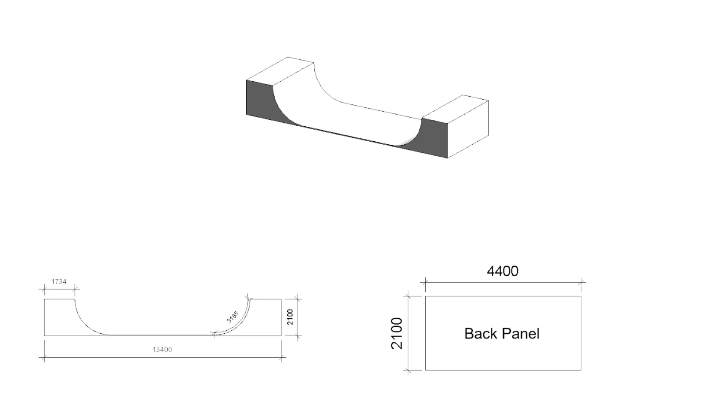
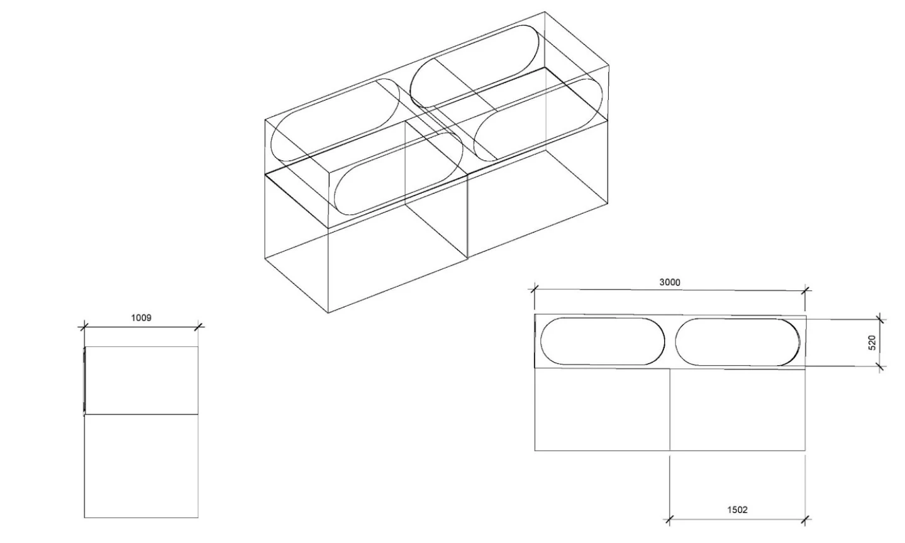
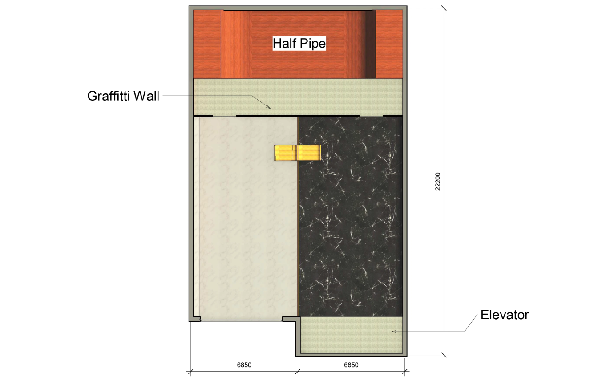

A retail and community space where skate culture is practised, displayed and shared.
Skatehouse was developed from a brief to design a retail environment. The concept looks beyond the transaction, asking how a shop could actively support the culture it sells. Drawing on skateboarding's origins in surfers translating waves onto land, the scheme uses inversion as both a spatial and visual idea.
Across two levels, the ground floor combines boards, components and gallery-style displays with a graffiti wall and indoor half-pipe. A warmer upper floor holds clothing, informal seating and a lounge overlooking the ramp. Skateable surfaces, rotating displays and projected skate footage allow the building to shift between shop, meeting place and event venue.
The two floors deliberately invert one another. The ground level is monochrome, hard-wearing and active, while the upper level introduces colour, soft furniture and a more domestic atmosphere. Skatelite, polished concrete and non-slip porcelain support active use, while switchable storefront glass becomes a screen for skate films or live footage from the ramp. The contrast allows grit and refinement, retail and recreation, to coexist without sanitising the culture.


